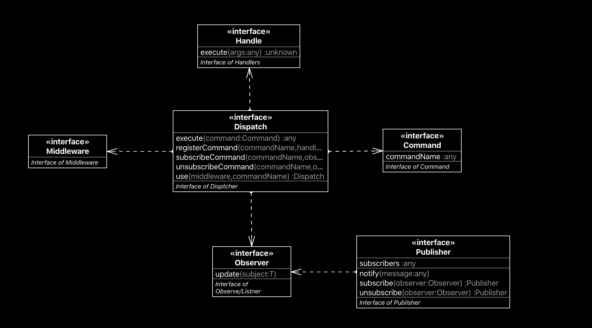

Command-Buss
This project provide a simple and decoupled solution from a command handle structure with suport of publish subscribe.

Usage
Install
npm i command-bus-tsBasic Usage
var CommandBus = require('command-bus-ts').CommandBus
var test = new CommandBus();
test
.registerCommand('ok', {
execute: (...req) => {
return 'done'
}
})
.use((req, next) => {
req.x = 'xxx';
console.log('global Middleware', req);
next();
})
.use((req, next) => {
req.y = 'yyy';
console.log('local Middleware', req);
next();
}, 'ok')
.use((req, next) => {
req.handle.execute(req);
req.handle.execute = function(test){
console.log('changed')
return 'done changed';
}
console.log('local Middleware change handle', req);
next();
}, 'ok')
.subscribeCommand('ok', {
update: (subject) => {
console.log('alert', subject);
}
});
const res = test.execute(
{
commandName: 'ok',
aaa: 1
});
/**
global Middleware {
command: { commandName: 'ok', aaa: 1 },
commandName: 'ok',
handle: { execute: [Function: execute] },
middlewares: [ [Function], [Function] ],
listners: DefaultPublisher { subscribers: Set { [Object] } },
x: 'xxx'
}
local Middleware {
command: { commandName: 'ok', aaa: 1 },
commandName: 'ok',
handle: { execute: [Function: execute] },
middlewares: [ [Function], [Function] ],
listners: DefaultPublisher { subscribers: Set { [Object] } },
x: 'xxx',
y: 'yyy'
}
local Middleware change handle {
command: { commandName: 'ok', aaa: 1 },
commandName: 'ok',
handle: { execute: [Function] },
middlewares: [ [Function], [Function] ],
listners: DefaultPublisher { subscribers: Set { [Object] } },
x: 'xxx',
y: 'yyy'
}
changed
alert {
req: { commandName: 'ok', aaa: 1 },
res: 'done changed',
error: undefined
}
response of done changed
**/see more in docs